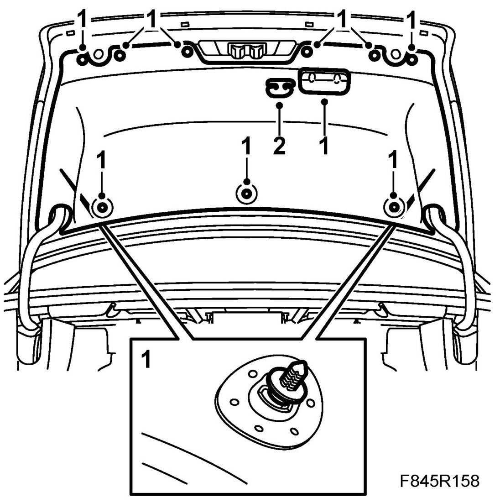
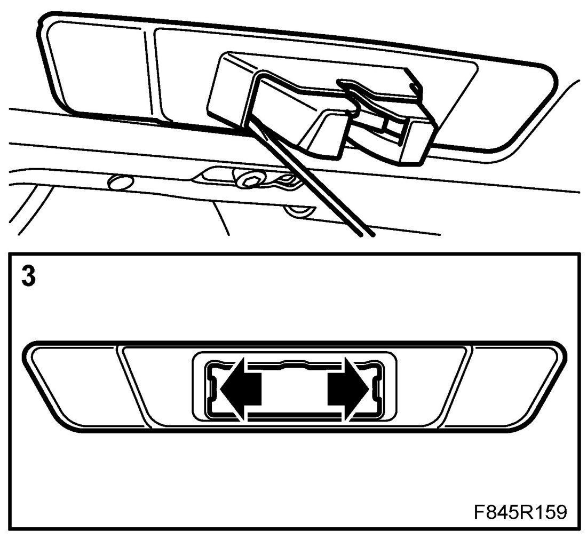
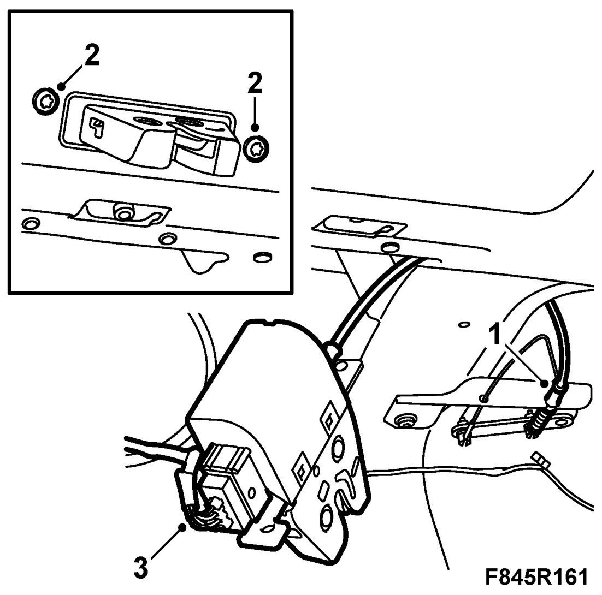
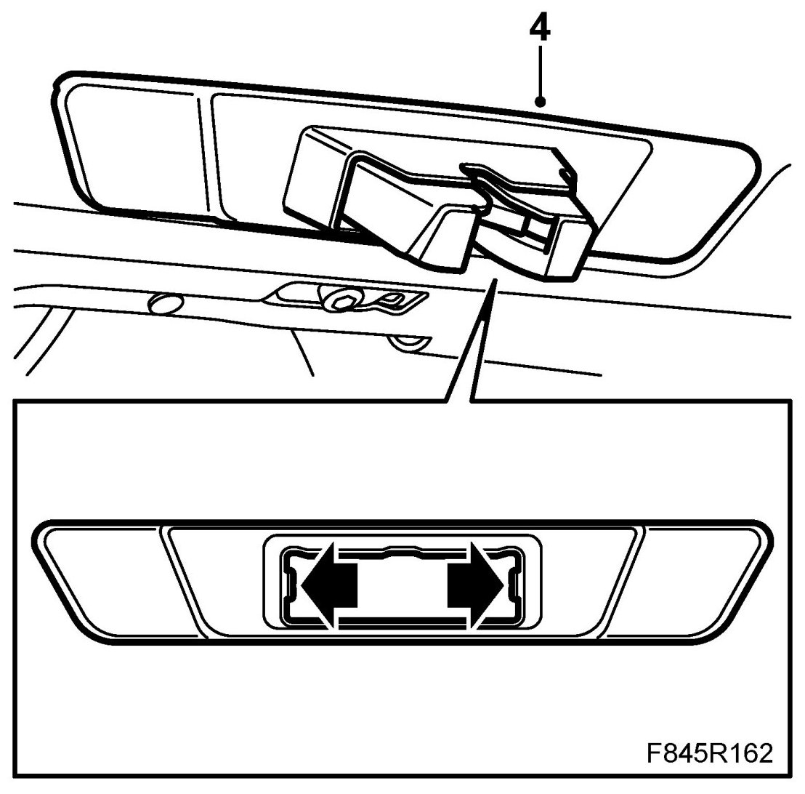
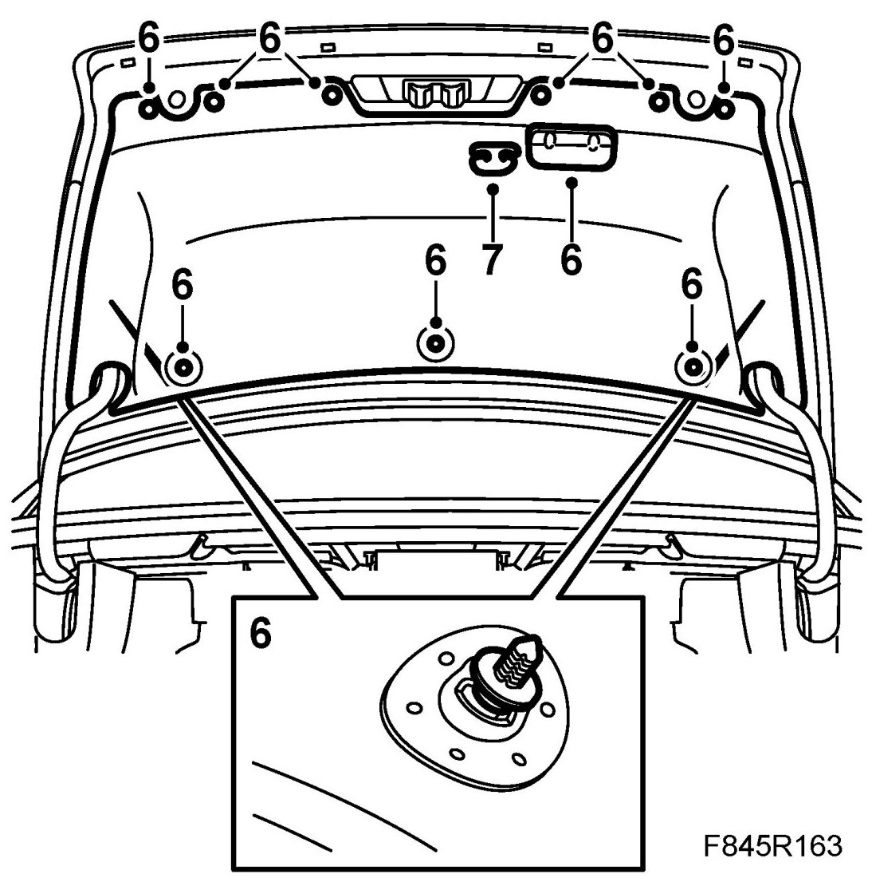

Boot Lid Lock
Boot Lid Lock
To remove
1. Open the boot lid and remove the Boot lid trim.

2. US/CA: Loosen the cable from the emergency opening handle.
3. Remove the cover from the lock by inserting a screwdriver and undoing the clips.

4. Certain cars: Remove the cover bolt.
Remove the lock's screws
5. Part the connector.
6. US/CA: Remove the emergency opening cable from the bracket.
To fit
1. US/CA: Fit the emergency opening cable to the bracket.

2. Refit the lock and fit the locks screws.
Certain cars: Fit the cover bolt.
3. Plug in the connector.
4. Fit the lock cover. Make sure all the clips engage properly.

5. US/CA: Insert the cable through the hole in the trim.
6. Fit the boot lid's trim and inner opening handle.

7. US/CA: Fit the cable onto the emergency opening handle. Fit the handle to the trim. Check the function of the emergency opening handle.
8. Close the boot lid. Check that the lock works.